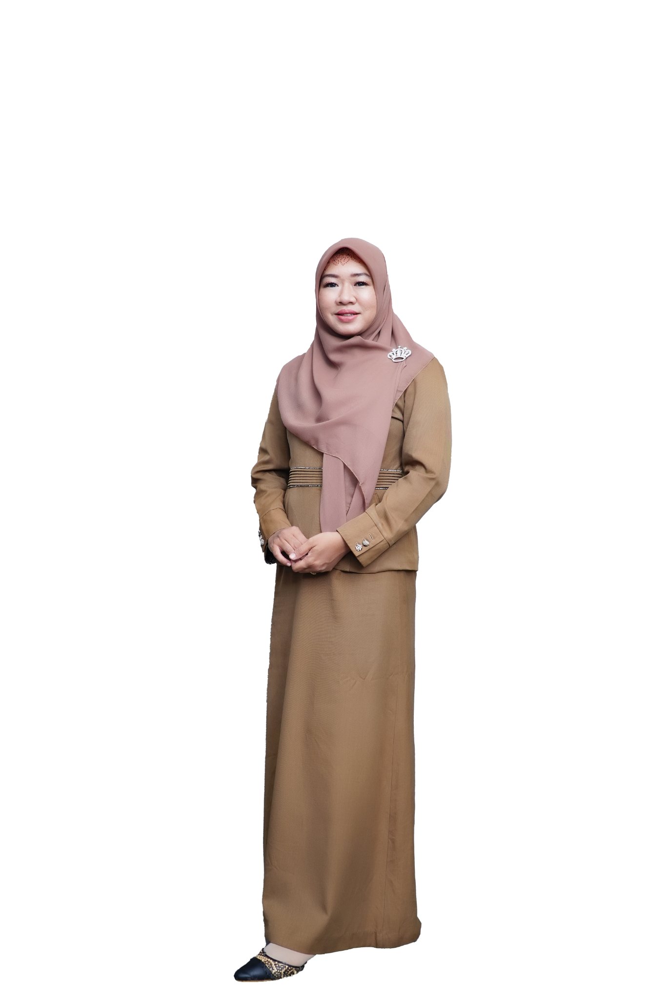

SELAMAT DATANG DI SMP NEGERI 7 KATINGAN HILIR
Berkarakter,
Berkarakter,
Berprestasi, dan Menginspirasi.
Ruang belajar, bertumbuh, berkarya, dan menginspirasi untuk membangun masa depan yang penuh potensi.
SCROLL

SAMBUTAN KEPALA SEKOLAHSelamat Datang di
Selamat Datang di
SMP Negeri 7 Katingan Hilir
Selamat datang di website resmi SMP Negeri 7 Katingan Hilir. Website ini menjadi ruang informasi, dokumentasi, dan kolaborasi untuk mengenal lebih dekat perjalanan, program, karya, serta prestasi sekolah kami.
Kami berkomitmen menghadirkan pendidikan yang humanis, inklusif, bermakna, dan berpihak pada tumbuh kembang murid. Melalui semangat BHINEKA, kami mendorong setiap murid untuk mengenali potensinya, berkarakter, berpikir kritis, berkreasi, peduli lingkungan, serta siap menghadapi perubahan.
Semoga ruang digital ini memperkuat hubungan sekolah, keluarga, dan masyarakat dalam mendukung pendidikan yang lebih baik.
Fahriyana, S.Pd., M.Pd.Kepala SMP Negeri 7 Katingan Hilir